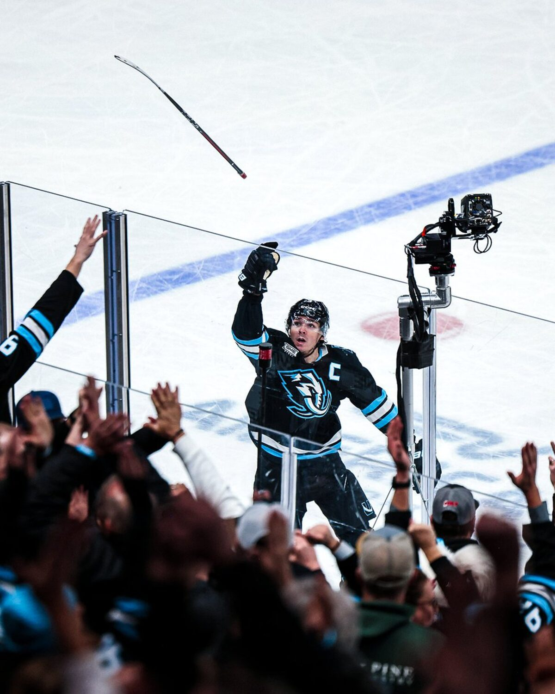

Two years ago, "where can I watch hockey in Salt Lake City" was a trick question — the answer was basically "your couch." Then the Utah Mammoth showed up, sold out the Delta Center 41 nights a year, and made a franchise-first playoff run. Now the puck-curious are everywhere, and the city has finally caught up: there are real hockey bars, real watch parties, and real crowds losing their minds over an icing call. Here's your 2026 field guide to catching a game on a screen bigger than your TV — glizzy in hand.
If you want a guaranteed room full of Mammoth fans, start with the team's official watch-party partners. Over the 2025-26 season and their first playoff run, the Mammoth teamed up with a rotating lineup of Salt Lake area bars to host sanctioned watch parties — think giveaways, jersey crowds, and the entire building groaning in unison. The regular partner list has included:
The exact venues rotate season to season, so check the Mammoth's official channels for the current schedule before you commit — but any bar on that list is a safe bet for a packed, jersey-clad house.
Going to the game but want to warm up first — or can't get tickets and want the next-best atmosphere? These downtown spots do wall-to-wall screens and big crowds:

Not everyone wants a 40-screen sports palace. If you'd rather nurse a pint and actually hear the commentary, go smaller:
Utah's liquor rules can affect hours and whether a spot is a "bar" or a "restaurant," so if you're bringing a group, a quick call ahead never hurts.
During the 2026 playoff run, the Mammoth threw free, open-to-the-public watch parties on the SeatGeek plaza outside the Delta Center — live entertainment, games, a beer garden, the works. It's the cheapest way in the building's shadow to feel the playoff buzz, and the kind of thing that tends to come back when the stakes are high. Keep an eye out for it next spring.
Here's the friendly warning we give everyone: watching hockey in a great bar is a gateway drug. You start yelling "SHOOT" at a screen, and six months later you're the one getting yelled at from a bench. If the Mammoth got you hooked, the on-ramp to actually playing is shorter than you think — we broke it all down in our step-by-step guide to joining a beer league in Utah, and if you're figuring out where to skate, our complete directory of ice rinks in Utah has you covered.
The Mammoth play at the Delta Center. The Utah Glizzies play at the Mammoth Ice Center in Sandy — and unlike the pros, we'll actually let you get on the ice. Come see what beer league hockey is all about.
Meet the Team Go to The PitSalt Lake City finally has a hockey-watching scene worth showing up for. For the biggest crowd and the most screens, hit Flanker or an official Mammoth watch-party bar. For a quieter pint, The Bruce or a neighborhood pub does the trick. And when watching stops being enough — you know where to find us.